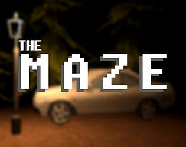

The M A Z E
This was my first attempt at a horror game. It uses a PSX style to create a spooky atmosphere a lot more easily than say if I were to make the game realistic looking artstyle. A lot of the assets were lifted from sketchfab but this is mainly due to the lack of development time I had. This is due to the fact I made this for the Friday Night Game Jam in which you have three hours to develop a game (doesn't include planning time and asset making prior to engine work). It's an incredibly basic game that focuses on atmosphere and worldbuilding a lot more than gameplay, subtly creating a narrative through the atmosphere. The game has multiple endings, when you're presented with two paths after picking up the shotgun, you have the option to go left or right. Once you've reached a certain pont when travelling down either path, you won't be able to turn back. This taught me a lot about cutscenes, animation and more. The game does lack sound though due to time constraints. This was one of my most recent solo projects and latest entry to the Friday Night Game Jam.
You can play the game at my itch.io page: bigmemerman1.itch.io